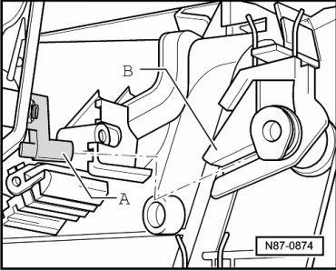

Right Center Vent and Right Side Vent
Door Motors
Right Center Vent and Right Side Vent
Removing
• The Right Center Vent Motor (V111) and the Right Side Vent Motor (V300) are located on the A/C unit on the right upper retaining plate.
• The lower retaining plate must be removed first before the upper retaining plate can be removed.
- Initiate control motor Basic Setting function with Diagnostic Operation System (VAS 5051B).
- When SF appears on the left of the Climatronic operating display, switch ignition off.
• Control motors can only be re-installed in the service position after removal.
- Remove the lower retaining plate on the right side of the A/C unit. Refer to --> [ Right Lower A/C Unit Retaining Plate ] Right Lower A/C Unit Retaining Plate
- Remove the upper retaining plate screws - 3 -.

• To remove the retaining plate the bolts - 1 - are not loosened or removed, they are used for guiding the retaining plate.
• Mark the connections for each motor to prevent confusing them.
- Disconnect connectors.
- Pull retaining plate and control motors out downwards.
- If the Right Center Vent Motor (V111) must be replaced, then remove the screws - 4 - (quantity: 3) from the left motor, identified by - A - in the illustration.
- If the Right Side Vent Motor (V300) must be replaced, then remove the screws - 4 - (quantity: 3) from the right motor, identified by - B - in the illustration.
Installing
Installation is carried out in the reverse order, when doing this note the following:
- When installing, make sure control motor drivers - A - are pushed into retainers - B -.

- Initiate the basic setting function with the Vehicle Diagnosis, Testing And Information System (VAS 5051B).